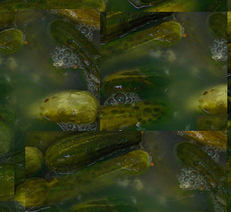

File I/O
Working with Files
Though everybody has an understanding of the term file, we want to give a formal definition anyway:
A file or a computer file is a chunk of logically related data or information which can be used by
computer programs. Usually a file is kept on durable storage. A unique name and path can be used
by human users or in programs or scripts to access a file for reading and modification purposes.
The term "file" in above described meaning appeared in the history of computers very early. It
was used as early as 1952, when punch cards where used.
A programming language without the ability to store and retrieve previously stored
information would be hardly useful.
The most basic tasks involved in file manipulation are reading data from files and
writing or appending data to files.
The syntax for reading and writing files in Python is similar to programming languages like C
and C++ or Perl, but easier to handle.
In our first example we want to show how to read data from a file. The way of telling Python
that we want to read from a file is to use the open function. The first parameter is the name
of the file we want to read and with the second parameter assigned to "r" we are determining
that we want to read.
fobj = open("ad_lesbiam.txt", "r")
The "r" is optional. An open() command with just a file name is opened for reading per default.
The open() function returns a file object, which offers attributes and methods.
fobj = open("ad_lesbiam.txt")
After we have finished working with a file, we have to close it again by using the
file object method close():
fobj.close()Now we want to finally open and read a file. You can download the text file ad_lesbiam.txt, if you want to test it yourself:
fobj = open("ad_lesbiam.txt")
for line in fobj:
print line.rstrip()
fobj.close()
If we save this script and call it "file_read.py", we get the following output,
provided that the textfile is available:
$ python file_read.py V. ad Lesbiam VIVAMUS mea Lesbia, atque amemus, rumoresque senum severiorum omnes unius aestimemus assis! soles occidere et redire possunt: nobis cum semel occidit breuis lux, nox est perpetua una dormienda. da mi basia mille, deinde centum, dein mille altera, dein secunda centum, deinde usque altera mille, deinde centum. dein, cum milia multa fecerimus, conturbabimus illa, ne sciamus, aut ne quis malus inuidere possit, cum tantum sciat esse basiorum. (GAIUS VALERIUS CATULLUS)By the way, the poem above is a love poem of Catull to his beloved Lesbia.
Writing into a File
Writing to a file is as easy as reading from a file. To open a file for writing
we use as the second parameter a "w" instead of a "r". To actually write the data
to this file, we use the method write() of the file object.
Example:
fobj_in = open("ad_lesbiam.txt")
fobj_out = open("ad_lesbiam2.txt","w")
i = 1
for line in fobj_in:
print line.rstrip()
fobj_out.write(str(i) + ": " + line)
i = i + 1
fobj_in.close()
fobj_out.close()
Every line of the input text file is prefixed by its line number. So the result looks
like this:
$ more ad_lesbiam2.txt 1: V. ad Lesbiam 2: 3: VIVAMUS mea Lesbia, atque amemus, 4: rumoresque senum seueriorum 5: omnes unius aestimemus assis! 6: soles occidere et redire possunt: 7: nobis cum semel occidit breuis lux, 8: nox est perpetua una dormienda. 9: da mi basia mille, deinde centum, 10: dein mille altera, dein secunda centum, 11: deinde usque altera mille, deinde centum. 12: dein, cum milia multa fecerimus, 13: conturbabimus illa, ne sciamus, 14: aut ne quis malus inuidere possit, 15: cum tantum sciat esse basiorum. 16: (GAIUS VALERIUS CATULLUS)We have to point out one possible problem: What happens if you open a file for writing, and this file already exists. Be happy, if you had a backup of this file, if you need it, because as soon as an open() with a "w" has been executed the file will be removed. This is often what you want, but sometimes you just want to append to the file, like it's the case with logfiles.
If you want to append something to an existing file, you have to use "a" instead of "w".
Reading in one go
So far we worked on files line by line by using a for loop. Very often, especially if the file is not too large, it's more convenient to read the file into a complete data structure, e.g. a string or a list. The file can be closed after reading and the work is accomplished on this data structure:
>>> poem = open("ad_lesbiam.txt").readlines()
>>> print poem
['V. ad Lesbiam \n', '\n', 'VIVAMUS mea Lesbia, atque amemus,\n', 'rumoresque senum seueriorum\n', 'omnes unius aestimemus assis!\n', 'soles occidere et redire possunt:\n', 'nobis cum semel occidit breuis lux,\n', 'nox est perpetua una dormienda.\n', 'da mi basia mille, deinde centum,\n', 'dein mille altera, dein secunda centum,\n', 'deinde usque altera mille, deinde centum.\n', 'dein, cum milia multa fecerimus,\n', 'conturbabimus illa, ne sciamus,\n', 'aut ne quis malus inuidere possit,\n', 'cum tantum sciat esse basiorum.\n', '(GAIUS VALERIUS CATULLUS)']
>>> print poem[2]
VIVAMUS mea Lesbia, atque amemus,
In the above example, the complete poem is read into the list poem. We can acces e.g. the 3rd line with
poem[2].
Another convenient way to read in a file might be the method read() of open. With this method we can read the complete file into a string, as we can see in the next example:
>>> poem = open("ad_lesbiam.txt").read()
>>> print poem[16:34]
VIVAMUS mea Lesbia
>>> type(poem)
<type 'str'>
>>>
This string contains the complete file including the carriage returns and line feeds.
"How to get into a Pickle"

We don't mean what the heading says. We just want to show you, how you can save your data in an easy way,
so that you or better your program can reread them at a later date again. We are "pickling" the data, so that
it doesn't get lost.
Python offers for this purpose a module, which is called "pickle"
With the algorithms of the pickle module we can serialize and de-serialize Python object structures.
"Pickling" denotes the process which converts a Python object hierarchy into a byte stream,
and "unpickling" on the other hand is the inverse operation, i.e. the byte stream is converted back
into an object hierarchy. What we call pickling (and unpickling) is also known as "serialization"
or "flattening" a data structure.
An object can be dumped with the dump method of the pickle module:
pickle.dump(obj, file[,protocol])A serialized version of the object "obj" will be written to a file "file". The protocol determines the way the object should be written:
- 0=ascii
- 1=compact (not human readable)
- 2=optimzed classes
Objects which have been dumped to a file with pickle.dump can be reread into a program by using the method pickle.load(file). pickle.load recognizes automatically, which format had been used for writing the data.
A simple example:
import pickle
data = (1.4,42)
output = open('data.pkl', 'w')
pickle.dump(data, output)
output.close()
After this code had been executed, the content of the file data.pkl will look like this:
(F1.3999999999999999 I42 tp0 .This file can easily be read in again:
>>> import pickle
>>> f = open("data.pkl")
>>> data = pickle.load(f)
>>> print data
(1.3999999999999999, 42)
>>>
Only the objects and not their names are saved. That's why we use the assignment to data in the
previous example, i.e.data = pickle.load(f).